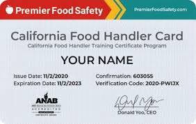
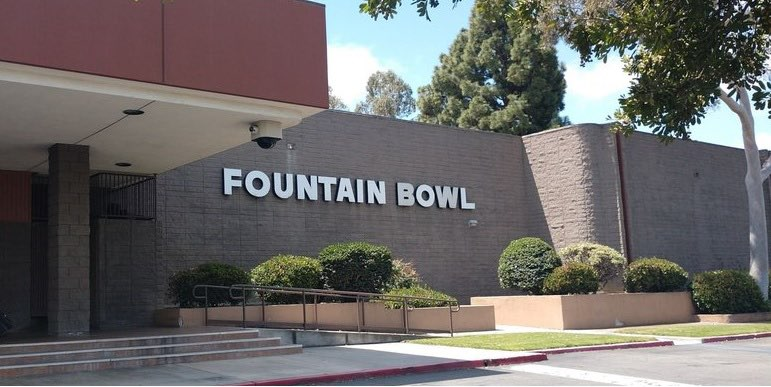
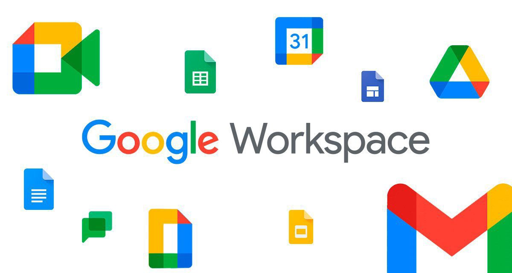
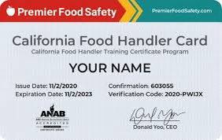
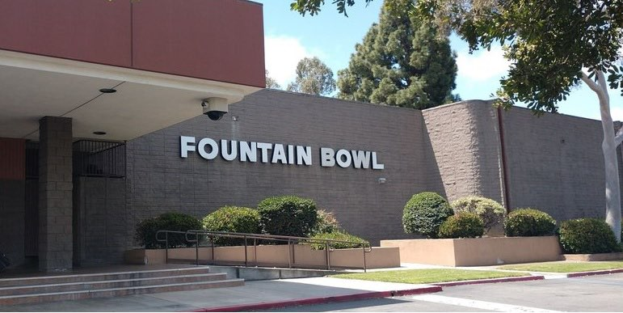
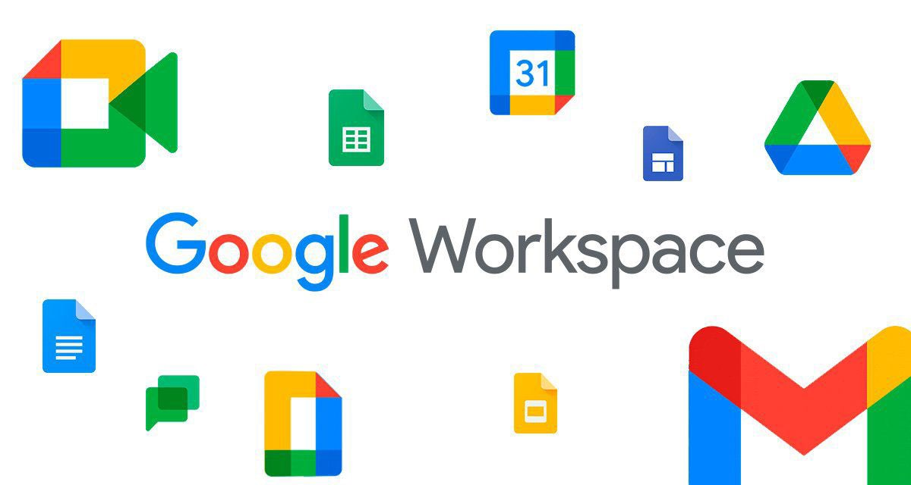

Emily Tran
My name is Emily and I am a student enrolled at University of California, Riverside. I have a lot of experience in the food industry from my past jobs and I have picked up many skillsets from a young age. In the places where I lack experience, I reserve for space to grow and learn. I am currently a Political Science major looking to go into Pre-Law in the future as a Criminal Justice Lawyer or a Corporate Lawyer. I find that helping others is the best way to spend my time.
I have worked since the age of 16/17 and have gained many different perspectives and skills. I have plenty of experience with customer service and working with others. I am ambitious and hard working as well as patient and attentive. I like to focus on details and tend to pick things up quickly. I have learned to manage my time well from and early age and I am always eager to learn. Even when I am not naturally good at something from the start, I will keep trying and never give up. I have excellent people skills and find it natural to talk to others. From my past volunteer experiences, I have learned how to take charge and can also play the role of a leader. I am outspoken and try to find the most efficient method on how to do things in order to maximize time. I have volunteered at churches and gone on various retreats as a group leader. I can handle kids very easily as well.
I have worked at three different restaurants in the past which have all dealt with customer service. I have learned how to handle a cash register/till as well as how to quickly clean up after a table. I have resolved many issues between coworkers as well as customers. When a task is given to me, I will quickly get to it as soon as I can because I find that it will be more convenient for the other person if done quickly and efficiently. I work very will in office settings and can quickly make presentations or write essays. I have always thrived in English and can efficiently put together proposals and ideas. I have the basic computer skills as well as typing and using spreadsheets. I can put together graphs and graphics in order to give a better understanding to others. I am a very creative and it helps when trying to come up with new ideas and solutions to problems. I can easily problem solve and I can do it rather quickly. I know how to operate the Yelp Service System for a good majority of restaurants. There are many other applications that I do not know but I am always willing to learn more and more everyday. I can also speak Vietnamese quite fluently and I can speak Spanish to a certain extent. English is my first language and I am fully fluent and understanding. I have a car and can easily commute to an office and I can also easily work from home.
Experience
Developer
• Food Service Worker at Fountain Bowl (Fountain Valley)
• Food Service Worker at The Boiling Crab (Garden Grove, Euclid))
• Food Service Worker at Yoshioishi (Riverside)
Teaching Assistant
• Ran sessions to help students learn how to code
• Reviewed and graded student coding projects
• Created educational content to help promote student education
• TA'd for over 400 students each academic quarter
Education
UC Riverside
University of California Riverside
University of California Riverside
Portfolio





 
